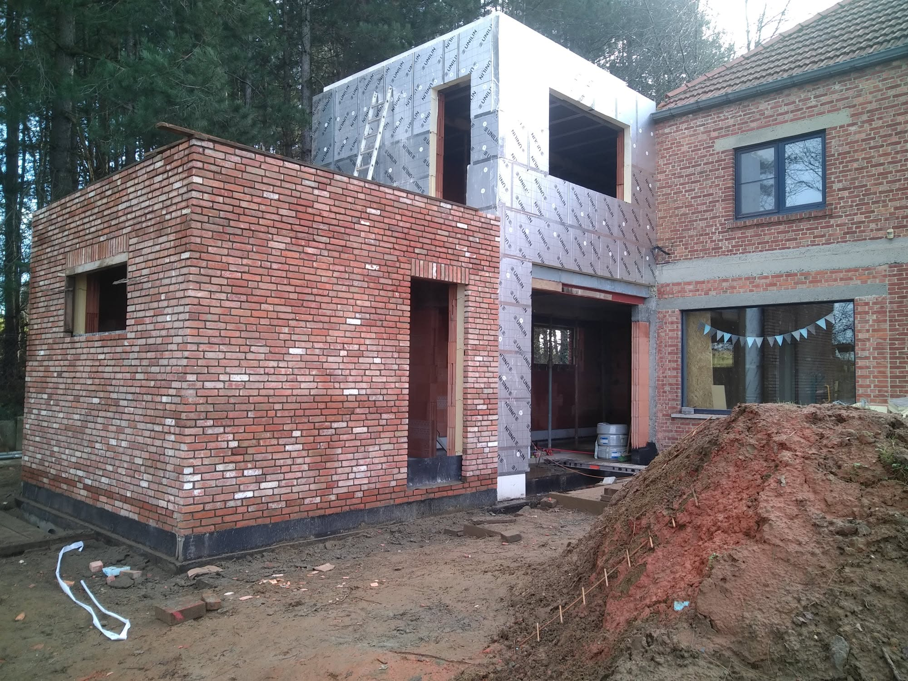

Onze Realisaties

Moderne Villa (Maaseik)
Volledige nieuwbouw van een energiezuinige, moderne gezinswoning met oog voor detail en strakke architectuur.
Totaalrenovatie ééngzinswoning (Genk)
Restauratie en modernisering van de oude gevel en het aanpassen van de binnenruimtes.

Woninguitbreiding (Hasselt)
Vergroting van de leefruimte door een moderne achterbouw met grote glaspartijen voor optimale lichtinval.